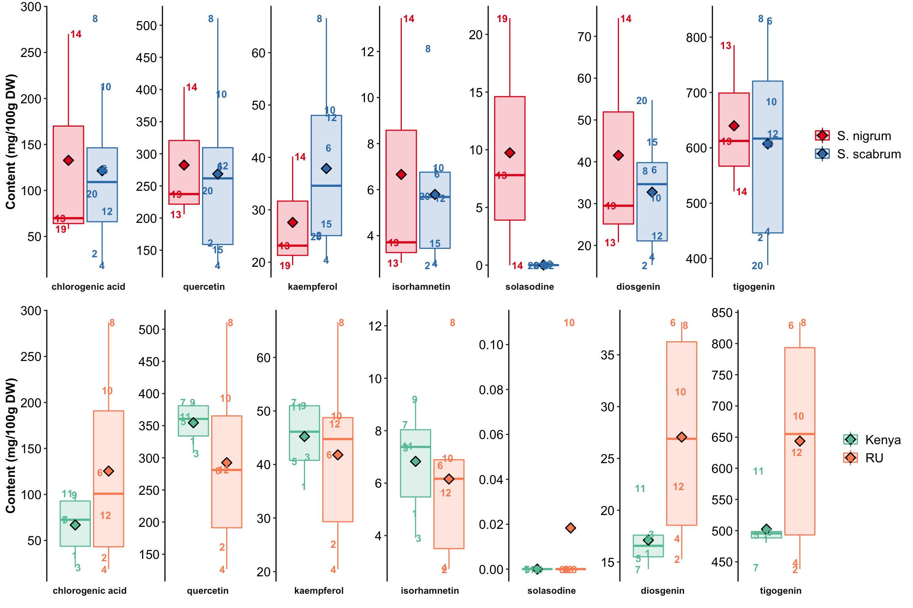

Bo Yuan Oct 2019 updated
The R code has been developed with reference to R for Data Science (2e), and the official documentation of tidyverse, and DataBrewer.co. See breakdown of modules below:
Data visualization with ggplot2 (tutorial of the fundamentals; and data viz. gallery).
Data wrangling with the following packages: tidyr: transform (e.g., pivoting) the dataset into tidy structure; dplyr: the basic tools to work with data frames; stringr: work with strings; regular expression: search and match a string pattern; purrr: functional programming (e.g., iterating functions across elements of columns); and tibble: work with data frames in the modern tibble structure.
library(readxl)
library(tidyr)
library(dplyr)
library(stringr)
library(rebus)
library(ggplot2)
library(ComplexHeatmap)
library(circlize)
library(RColorBrewer)
library(gridExtra)
library(cowplot)path = "/Users/Boyuan/Desktop/Manuscript files/5th_AIV leaf QQQ_JFC/Oct 2019 JFC/NS_leaf_PhytochemQQQ dataset.xlsx"d = read_excel(path, sheet = "Contrast.analysis")
# gather compounds
d = d %>%
gather(`chlorogenic acid`, quercetin, kaempferol, rhamnetin, isorhamnetin, solasodine, diosgenin, tigogenin,
key = compound, value = data)
# replace N.D. with zero values
d$data = d$data %>% str_replace(pattern = "N.D.", replacement = "0 ± 0")
# plit data into mean and standard deviation
d = d %>% separate(data, into = c("mean", "std"), sep = " ± ")
# convert mean and std to numeric value
d$mean = d$mean %>% as.numeric()
d$std = d$std %>% as.numeric()
# arrange order of display
d$compound = d$compound %>%
factor(levels = (c("chlorogenic acid", "quercetin", "kaempferol", "rhamnetin",
"isorhamnetin", "solasodine", "diosgenin", "tigogenin")),
ordered = T)
# NOTICE HERE!!
d = d %>% filter(ID != "PI 312110" & compound != "rhamnetin")
d = d %>% filter(compound != "rhamnetin")# define plot function
myplot = function(dataset, category){
dataset %>%
ggplot(aes_string(x = 1, y = "mean", color = category, fill = category), alpha = 0.2) +
geom_boxplot(alpha = .2, outlier.alpha = 0) +
facet_wrap(~compound, nrow = 1, strip.position = "bottom", scales = "free") +
# format
theme_classic() +
theme(axis.text = element_text(color = "black", size = 12),
axis.title = element_text(face = "bold"),
legend.title = element_blank(), legend.position = "right",
legend.text = element_text(colour = "black", size = 12),
strip.background = element_blank(), strip.text = element_text(face = "bold"),
# remove all y-axis related (not for plot, not for aesthetic)
axis.text.x = element_blank(), axis.line.x = element_blank(),
axis.ticks.x = element_blank(), axis.title.x = element_blank(),
axis.title.y = element_text(size = 12, face = "bold")) +
# add mean!
stat_summary(fun.y = mean, geom = "point", shape = 23,
position = position_jitterdodge(0),
color = "black", size = 3, stroke = 0.8)+
scale_y_continuous(breaks = scales::pretty_breaks(7),
limits = c(NA, NA)) + labs(y = "Content (mg/100g DW)") +
scale_color_brewer(palette = ifelse(category == "Species", "Set1", "Set2")) +
scale_fill_brewer(palette = ifelse(category == "Species", "Set1", "Set2")) +
geom_text(aes(label = `Sample No.`),
position = position_jitterdodge(0.25), size = 3.4, fontface = "bold")
}# SPECIES CONTRAST
# There are four accessions of S. nigrum. Only one planted in Kenya, while all four planted in RU.
# THus compare those planted in RU.
# This dataframe contains species planted in RU: 3 nigrumw with the peculiar nigrum USDA 312110 excluded), & 8 scabrum
species.contrast.df = d %>% filter(`CultivationSite` == "RU" & Species != "N.D.")
plt.species = myplot(species.contrast.df, category = "Species")
# Cultivation site (environment) CONTRAST
# Only those IDs cultivated both in RU and Kenya are included for comparison.
# The comparison includes a total of 6 comparisions, all from from scabru
selected.ID = c("BG 29", "Ex Hai", "BG 16", "SS 49 (Olevolosi)", "SS 04.2", "SS 52")
cultivationSite.contrast.df = d %>% filter(ID %in% selected.ID)
plt.cultivationSite = myplot(cultivationSite.contrast.df, category = "CultivationSite")
# combining two plot together
grid.arrange(plt.species, plt.cultivationSite, nrow = 2)
# category = "Species", group1 = "S. nigrum", group2 = "S. scabrum", alpha = 0.5, etc.
# There should be only two groups in a given category
calculateP = function(loop.df, alpha, category, group1, group2){
n.group1 = ( loop.df[[category]] == group1 ) %>% sum()
n.group2 = ( loop.df[[category]] == group2) %>% sum()
# print contrasted groups of the given category
print(paste("Contrast =", group1, "-", group2))
# set up Ci and Ci-related terms
Ci = c()
for (i in 1:nrow(loop.df)){
if( loop.df[[category]] [i] == group1){Ci[i] = (1/n.group1)
} else { Ci[i] = - 1/ n.group2 }
}
Contrast = sum(Ci * loop.df$mean)
`Sum.Ci^2` = sum(Ci^2)
# MSE and critical value
n.treatment = nrow(loop.df)
df.error = (3-1) * n.treatment
SSE = ((loop.df$std)^2*(3-1)) %>% sum()
MSE = SSE / df.error
critic.S = sqrt( MSE/3 * `Sum.Ci^2` ) *
sqrt( (n.treatment - 1) * qf(p = 1- alpha, df1 = (n.treatment - 1), df2 = df.error) )
# notice alpha input
# Significant or not?
ifsignificant = ifelse(
abs(Contrast) >= critic.S, "Yes! Significant!", "NO...."
)
# print
cat(unique(loop.df$compound) %>%
as.character(), # factor as character, otherwise output level of factor
": Critical value = ", round(critic.S, 3),
", Contrast =", round(Contrast, 3), ifsignificant, "\n\n")
}# compounds to loop through
myCompounds = d$compound %>% unique()for (i in myCompounds){
loop.df = species.contrast.df %>% filter(compound == i)
calculateP(loop.df, alpha = 0.6,
category = "Species", group1 = "S. nigrum", group2 = "S. scabrum")
}## [1] "Contrast = S. nigrum - S. scabrum"
## chlorogenic acid : Critical value = 31.932 , Contrast = 11.372 NO....
##
## [1] "Contrast = S. nigrum - S. scabrum"
## quercetin : Critical value = 26.757 , Contrast = 13.824 NO....
##
## [1] "Contrast = S. nigrum - S. scabrum"
## kaempferol : Critical value = 9.031 , Contrast = -10.293 Yes! Significant!
##
## [1] "Contrast = S. nigrum - S. scabrum"
## isorhamnetin : Critical value = 0.703 , Contrast = 0.869 Yes! Significant!
##
## [1] "Contrast = S. nigrum - S. scabrum"
## solasodine : Critical value = 1.667 , Contrast = 9.723 Yes! Significant!
##
## [1] "Contrast = S. nigrum - S. scabrum"
## diosgenin : Critical value = 5.541 , Contrast = 8.8 Yes! Significant!
##
## [1] "Contrast = S. nigrum - S. scabrum"
## tigogenin : Critical value = 32.492 , Contrast = 32.646 Yes! Significant!for (i in myCompounds){
loop.df = cultivationSite.contrast.df %>% filter(compound == i)
calculateP(loop.df, alpha = 0.001,
category = "CultivationSite", group1 = "RU", group2 = "Kenya")
}## [1] "Contrast = RU - Kenya"
## chlorogenic acid : Critical value = 77.88 , Contrast = 58.585 NO....
##
## [1] "Contrast = RU - Kenya"
## quercetin : Critical value = 73.267 , Contrast = -62.11 NO....
##
## [1] "Contrast = RU - Kenya"
## kaempferol : Critical value = 17.43 , Contrast = -3.432 NO....
##
## [1] "Contrast = RU - Kenya"
## isorhamnetin : Critical value = 1.609 , Contrast = -0.672 NO....
##
## [1] "Contrast = RU - Kenya"
## solasodine : Critical value = 0.014 , Contrast = 0.018 Yes! Significant!
##
## [1] "Contrast = RU - Kenya"
## diosgenin : Critical value = 3.233 , Contrast = 9.95 Yes! Significant!
##
## [1] "Contrast = RU - Kenya"
## tigogenin : Critical value = 80.1 , Contrast = 141.198 Yes! Significant!# SS between accessions
SS.accessions = species.contrast.df %>%
group_by(compound, Species) %>%
mutate(Species.mean = mean(mean),
SS.accessions = (mean - Species.mean)^2*3) %>%
group_by(compound) %>%
summarise(SS.accessions = sum(SS.accessions))
# SS between species
species.count = (species.contrast.df %>%
filter(compound == "chlorogenic acid"))$Species %>%
table() %>% as.data.frame() %>%
rename(Species = ".", counts = Freq)
SS.species = species.contrast.df %>%
group_by(compound) %>% mutate(grandmean = mean(mean)) %>%
dplyr::group_by(compound, Species) %>%
summarise(Species.mean = mean(mean),
grandmean = unique(grandmean)) %>%
inner_join(species.count, by = "Species") %>%
mutate(SS = (Species.mean - grandmean)^2 * counts * 3) %>%
group_by(compound) %>% summarise(SS.species = sum(SS))## Warning: Column `Species` joining character vector and factor, coercing
## into character vector## SSE
SSE = species.contrast.df %>% mutate(diff.square = std^2 * (3-1)) %>%
group_by(compound) %>% summarise(SSE = sum(diff.square))
## combine SS together to get the SST
SS.df = cbind(SS.species, SS.accessions, SSE)
SS.df = SS.df[, !(SS.df %>% colnames() %>% duplicated())] %>%
mutate(SST = SS.species + SS.accessions + SSE)# import most original data (showing triplicated measurements)
raw = read_excel(path, sheet = "R_plant conc.mg 100g.DW") %>%
filter(ID != "PI 312110")
# Calculate the generic SST to confirm calculation correctness
raw.species = raw %>% filter(`CultivationSite` == "RU" & Species != "N.D." ) %>%
gather(quercetin, kaempferol, rhamnein, isorhamnetin, solasodine, diosgenin, tigogenin,
key = compound, value = content)
raw.species.SST = raw.species %>%
group_by(compound) %>%
mutate(SST = (content - mean(content))^2 ) %>%
summarise(SST.generic = sum(SST))
# This basically confirms the correctness of my calculation.
# The larger the content magnitude, the less susceptible the calculation is to rounding error
inner_join(SS.df, raw.species.SST) %>%
mutate(error.percent = (SST - SST.generic)/SST * 100)## Joining, by = "compound"## Warning: Column `compound` joining factor and character vector, coercing
## into character vector## compound SS.species SS.accessions SSE SST
## 1 quercetin 1250.886005 429603.7033 12322.1750 443176.7643
## 2 kaempferol 693.396368 6155.0267 1403.8180 8252.2410
## 3 isorhamnetin 4.940028 405.0009 8.5116 418.4525
## 4 solasodine 618.775256 704.4920 47.8488 1371.1160
## 5 diosgenin 506.832001 8972.3888 528.4644 10007.6852
## 6 tigogenin 6975.821023 735140.5134 18170.2368 760286.5713
## SST.generic error.percent
## 1 443172.1504 0.001041076
## 2 9316.0197 -12.890784976
## 3 418.6207 -0.040209016
## 4 999.7155 27.087460461
## 5 10008.1637 -0.004781342
## 6 760276.0548 0.001383225# Now plot the partitioned variance for each compound!!!
SS.df = SS.df %>% gather(-1, key = Source, value = value)
SS.df$Source = SS.df$Source %>%
str_replace(pattern = "SS.species", replacement = "Species")
SS.df$Source = SS.df$Source %>%
str_replace(pattern = "SS.accessions", replacement = "Accessions")
SS.df$Source = SS.df$Source %>%
str_replace(pattern = "SSE", replacement = "Measurement")
source.levels = data.frame(Source = c("Species", "Accessions", "Measurement"),
level = c(1, 2, 3))
SS.df = inner_join(SS.df, source.levels)
SS.df$Source = SS.df$Source %>%
factor(levels = c("Species", "Accessions", "SST", "Measurement"))
SS.df$compound = SS.df$compound %>%
factor(levels = (c("chlorogenic acid", "quercetin", "kaempferol", "rhamnetin",
"isorhamnetin", "solasodine", "diosgenin", "tigogenin")),
ordered = T)
# add contribution percent
SS.df = SS.df %>% filter(Source != "SST") %>%
group_by(compound) %>%
mutate(percent = (value/sum(value)* 100) %>% round(1))
plt.species.vairance.partition = SS.df %>% filter(Source != "SST") %>%
ggplot(aes(x = compound, y = percent, fill = Source)) +
geom_bar(stat = "identity", position = "stack", alpha = 0.7,
color = "black", size = 0.1) +
theme_classic() +
theme(axis.text = element_text(color = "black", size = 12),
axis.title = element_blank(),
legend.title = element_blank(),
legend.text = element_text(size = 12)) +
scale_fill_brewer(palette = "OrRd") +
geom_text(aes(label = percent),
position = position_stack(0.5),
color = "black", size = 3.1)
plt.species.vairance.partition# SS of accessions
cultivationSite.contrast.df = cultivationSite.contrast.df %>%
group_by(compound) %>%
mutate(grandmean = mean(mean)) %>%
group_by(compound, ID) %>%
mutate(accession.mean = mean(mean),
SS.accession = (accession.mean - grandmean)^2*3)
# SS of environment
cultivationSite.contrast.df = cultivationSite.contrast.df %>%
group_by(compound, CultivationSite) %>%
mutate(cultivationSite.mean = mean(mean),
SS.cultivationSite = (cultivationSite.mean - grandmean)^2*3)
# SS of accession & environment interaction
cultivationSite.contrast.df = cultivationSite.contrast.df %>%
group_by(compound, CultivationSite, ID) %>%
mutate(SS.interaction = (mean + grandmean - accession.mean - cultivationSite.mean)^2*3)
# SSE
cultivationSite.contrast.df = cultivationSite.contrast.df %>%
mutate(SSE = (std^2) * (3-1))
# SST
cultivationSite.contrast.df = cultivationSite.contrast.df %>%
mutate(SST = SSE + SS.cultivationSite + SS.accession + SS.interaction)
# Sum rows up for final SS
cultivationSite.SS.summary = cultivationSite.contrast.df %>%
group_by(compound) %>%
summarise(SSE = sum(SSE),
SS.cultivationSite = sum(SS.cultivationSite),
SS.accession = sum(SS.accession),
SS.interaction = sum(SS.interaction),
SST = sum(SST))
# check with generic SST to confirm correctness
# recall "selected.ID" variable storing selected IDs for cultivation/environment comparision
raw.CultivationSite = raw %>%
filter(ID %in% selected.ID) %>%
gather(quercetin, kaempferol, rhamnein, isorhamnetin, solasodine, diosgenin, tigogenin,
key = compound, value = content)
raw.CultivationSite.SST = raw.CultivationSite %>%
group_by(compound) %>% mutate(SST = (content - mean(content))^2 ) %>%
summarise(SST.generic = sum(SST))
# plot Variance partition !!!
cultivationSite.SS.summary = cultivationSite.SS.summary %>%
gather(-1, key = source, value = SS)
cultivationSite.SS.summary$source = cultivationSite.SS.summary$source %>%
str_replace(pattern = "SSE", replacement = "Measurement")
cultivationSite.SS.summary$source = cultivationSite.SS.summary$source %>%
str_replace(pattern = "SS.cultivationSite", replacement = "Environment")
cultivationSite.SS.summary$source = cultivationSite.SS.summary$source %>%
str_replace(pattern = "SS.accession", replacement = "Accession")
cultivationSite.SS.summary$source = cultivationSite.SS.summary$source %>%
str_replace(pattern = "SS.interaction", replacement = "Interaction")
# display order
cultivationSite.SS.summary$source = cultivationSite.SS.summary$source %>%
factor(levels = c("Environment", "Accession", "Interaction", "Measurement"))
cultivationSite.SS.summary$compound = cultivationSite.SS.summary$compound %>%
factor(levels = (c("chlorogenic acid", "quercetin", "kaempferol", "rhamnetin",
"isorhamnetin", "solasodine", "diosgenin", "tigogenin")), ordered = T)
# contribution percent
cultivationSite.SS.summary = cultivationSite.SS.summary %>%
filter(source != "SST") %>%
group_by(compound) %>%
mutate(percent = (SS/sum(SS)*100) %>% round(1))
# plotting
plt.cultivationSite.variance.partition = cultivationSite.SS.summary %>%
ggplot(aes(x = compound, y = percent, fill = source)) +
geom_bar(stat = "identity", position = "stack", alpha = 0.7,
color = "black", size = 0.1) +
theme_classic() +
theme(axis.text = element_text(color = "black", size = 12),
axis.title = element_blank(),
legend.title = element_blank(),
legend.text = element_text(size = 12))+
scale_fill_brewer(palette = "YlGn") +
geom_text(aes(label = percent), position = position_stack(0.5), color = "black", size = 3.1)
plt.cultivationSite.variance.partition# set uniform parameter for heatmap
bar_width = 3 # for row and column color side bar
# read data
path <- "/Users/Boyuan/Desktop/My publication/5th. N.S. leaf quant QqQ/R data analysis manuscript data.xlsx"
data <- lapply(excel_sheets(path), read_excel, path = path)
content_df <- data[[1]] %>% as.data.frame()
sample_df <- data[[2]] %>% as.data.frame()
# simplify sample ID name in sample_df
sample_df$ID[7:8] <- rep("SS 49", 2)
sample_df$ID <- str_replace_all(sample_df$ID, pattern = "-", replacement = "NA")
# remove deviation values in content_df
pattern = "±" %R% optional(SPC) %R% one_or_more(DGT) %R% DOT %R% one_or_more(DGT)
content_mat <- vapply(content_df, str_replace, pattern = pattern, replacement = "",
character(length = nrow(content_df))) # vapply convert dataframe to matrix
# order columns in alphabetical order
hm_mat <- content_mat[, -1][, colnames(content_df)[2: ncol(content_df)] %>% order()]
# add row names
# matrix allow identical row names but data frame does not allow identical row names
rownames(hm_mat) <- sample_df$ID
# add sample code number
rownames(hm_mat) = str_c(rownames(hm_mat), paste0("_", 1:20))
# type conversion: character to numeric
# set up matrix to be fill up
hm_mat_dbl <- matrix(1: (ncol(hm_mat) * nrow(hm_mat)), nrow = nrow(hm_mat))
rownames(hm_mat_dbl) <- rownames(hm_mat)
colnames(hm_mat_dbl) <- colnames(hm_mat)
for (i in 1: nrow(hm_mat)) {
for (j in 1: ncol(hm_mat)) {
hm_mat_dbl[i, j] <- as.numeric(hm_mat[i, j])
}
}
# check warning numbers equal to counts of undetected entries
# total number of "N.D." values for undetected levels
# sum(hm_mat == "N.D.")
# value transformation
minimum_value <- min(hm_mat_dbl, na.rm = T)
hm_mat_dbl_NAzero <- replace_na(hm_mat_dbl, replace = 0)
hm_mat_transformed <- log10(hm_mat_dbl_NAzero + minimum_value/2) %>% round(digits = 3)
# color of main plot
myblue <- colorRampPalette(c("white",brewer.pal(9, "Blues"), "black"))(50)
# pie(rep(1, length(myblue)), col = myblue)
myblue_ramp2 <- colorRamp2(seq(from = log10(minimum_value),
to = max(hm_mat_transformed),
length.out = 50), myblue)# convert compound to class
cmpd_class_code <- c("chlorogenic acid" = "phenolic acid",
"diosgenin" = "saponin",
"isorhamnetin" = "flavonol",
"kaempferol" = "flavonol",
"quercetin" = "flavonol",
"rhamnetin" = "flavonol",
"solasodine" = "alkaloid",
"tigogenin" = "saponin")
cmpd_class <- cmpd_class_code[colnames(hm_mat_transformed)]
# convert class to color
Set1 <- brewer.pal(9, "Set1")
# pie(rep(1, length(Set1)), col = Set1) # 9 being the darkest color
class_color_code <- c("phenolic acid" = Set1[5],
"flavonol" = Set1[3],
"saponin" = "steelblue",
"alkaloid" = "firebrick")
class_color <- class_color_code[cmpd_class]
# make column sidebar
col_anno <- HeatmapAnnotation(
cmpd.class = cmpd_class,
col = list(cmpd_class = class_color_code),
annotation_legend_param = list(title = "compound category"),
# boxplot
boxplot = anno_boxplot(hm_mat_transformed,
gp = gpar(fill = class_color),axis = T),
annotation_height = unit.c(unit(bar_width, "mm"), unit(20, "mm")))red <- brewer.pal(9, "YlOrRd")
# pie(rep(1, length(red)), col = red)
species_color_code <- c("S. scabrum" = "#800026",
"S. nigrum" = "#FEB24C",
"N.D." = "#FFFFCC")
species_anno <- rowAnnotation(species = sample_df$Species,
col = list(`sample_df$Species` = species_color_code),
width = unit(bar_width, "mm"),
annotation_legend_param = list(title = "species"))sample_df$Source[18:19] <- rep("Simlaw Kenya",2)
sample_df$Source[20] <- "Baker Creek Heirloom"
institute_color_code <- c(
"WorldVeg" = "#66C2A5",
"USDA" = "#FC8D62",
"Kenyan local market" = "#8DA0CB",
"Simlaw Kenya" = "#E78AC3",
"Baker Creek Heirloom" = "#A6D854")
institute_anno <- rowAnnotation(source = sample_df$Source,
col = list(`sample_df$Source` = institute_color_code),
width = unit(bar_width, "mm"),
annotation_legend_param = list(title ="seed source"))greys <- brewer.pal(9, "Greys")
# pie(rep(1, length(greys)), col = greys)
site_color_code <- c("Kenya" = greys[4], "RU" = greys[8])
cultivation_site_anno <-
rowAnnotation(sites = sample_df$`Cultivation site`,
col = list("sample_df$`Cultivation site`" = site_color_code),
width = unit(bar_width, "mm"),
annotation_legend_param = list(title = "cultivation site"))sample_df$`Harvest time` <- str_replace_all(sample_df$`Harvest time`,
pattern = exactly("2017-03-14"),
replacement = "2017 March")
sample_df$`Harvest time` <- str_replace_all(sample_df$`Harvest time`,
pattern = exactly("2016-07-08"),
replacement = "2016 July")
time <- sample_df$`Harvest time` %>% as.character()
paired <- brewer.pal(12, "Paired")
# pie(rep(1, length(paired)), col = paired)
time_color_code <- c("2017 March" = paired[5],
"2016 July" = paired[6])
harvest_time_anno <- rowAnnotation(time = time,
col = list(time = time_color_code),
width = unit(bar_width, "mm"),
annotation_legend_param = list(title = "harvest time"))# make row stacked bar plot
rowname <- rownames(hm_mat_dbl_NAzero)
rownames(hm_mat_dbl_NAzero) <- NULL
barplot_df <- hm_mat_dbl_NAzero %>% as.data.frame()
barplot_df$ID <- rowname
barplot_df <- cbind(barplot_df["ID"], barplot_df[1: (ncol(barplot_df) -1) ])
barplot_mat <- barplot_df %>%
mutate(`phenolic acid` = `chlorogenic acid`,
flavonol = isorhamnetin + kaempferol + quercetin + rhamnetin,
alkaloid = solasodine,
saponin = diosgenin + tigogenin) %>%
select(`phenolic acid` : `saponin`) %>%
data.matrix()
rownames(barplot_mat) <- rowname
barplot_anno <- rowAnnotation(
barplot = row_anno_barplot(
barplot_mat, axis = T,
gp = gpar(col = NA, fill = c("phenolic acid" = Set1[5],
"flavonol" = Set1[3],
"alkaloid" = "firebrick",
"saponin" = "steelblue"))),
annotation_width = unit(50, "mm"))# make heatmap ------------------------------------------
main_plot <- Heatmap(hm_mat_transformed, col = myblue_ramp2,
heatmap_legend_param = list(title = "log10 [mg/100 g DW]",
color_bar = "continuous"),
row_names_gp = gpar(fontsize = 10),
row_dend_width = unit(15, "mm"),
column_dend_height = unit(15, "mm"),
top_annotation = col_anno,
cluster_columns = T,
cluster_rows = T,
rect_gp = gpar(col = "black", lwd = 0.3))draw(species_anno + institute_anno +
cultivation_site_anno + harvest_time_anno + main_plot + barplot_anno,
heatmap_legend_side = "bottom",
annotation_legend_side = "bottom",
row_dend_side = "left")# recall that sample_df is the sample label data set
rownames(hm_mat_dbl_NAzero) = str_c(sample_df$`Sample No.`, "_", sample_df$ID)plt.PCA.ALL.accessions = hm_mat_dbl_NAzero %>% scale() %>% prcomp() %>%
ggbiplot::ggbiplot(labels = rowname, groups = as.character(sample_df$`Sample No.`)) +
theme_classic() + # theme(legend.position = "None") +
scale_x_continuous(breaks = seq(-2, 3, by = 1)) +
labs(title = "All 20 accessions") +
theme(legend.position = "none") +
stat_ellipse()
plt.PCA.ALL.accessionsBy Species (planted in RU; all S. nigrum were cultivated in RU, no nigrum in Kenya trail)
RU.site = sample_df$`Cultivation site` == "RU"
plt.PCA.species = hm_mat_dbl_NAzero[RU.site, ] %>% # selecting only those planted in RU
scale() %>%prcomp() %>%
ggbiplot::ggbiplot(labels = rownames(hm_mat_dbl_NAzero[RU.site, ]),
groups = (sample_df %>% filter(`Cultivation site` == "RU"))$Species,
ellipse = T) +
theme_classic() +
scale_color_brewer(palette = "Dark2") +
scale_x_continuous() +
labs(title = "species comparison in RU trail")
plt.PCA.speciesBy Cultivation site (comprising 6 pairwise comparision of S. scabrum)
plt.PCA.cultivationSite =
# select 6 pairwise S. scabrum in two sites; remove rhamnetin, found lacking in selected cultivars
hm_mat_dbl_NAzero[1:12, -6] %>%
scale() %>% prcomp() %>%
ggbiplot::ggbiplot(labels = rownames(hm_mat_dbl_NAzero[1:12, -6]),
groups = sample_df$`Cultivation site`[1:12], ellipse = T) +
theme_classic() +
scale_color_brewer(palette = "Set1") +
scale_x_continuous() +
labs(title = "S.scabrum cultivation site comparison")
plt.PCA.cultivationSiteBy Cultivation site–grouped by accessions
plt.PCA.cultivationSite_grouped.by.accessions =
# select 6 pairwise S. scabrum in two sites; remove rhamnetin, found lacking in selected cultivars
hm_mat_dbl_NAzero[1:12, -6] %>%
scale() %>% prcomp() %>%
ggbiplot::ggbiplot(var.axes = T,
labels = rownames(hm_mat_dbl_NAzero[1:12, -6]),
groups = sample_df$ID[1:12]) +
theme_classic() + # theme(legend.position = "None") +
scale_x_continuous() +
labs(title = "S.scabrum cultivation site comparison")
plt.PCA.cultivationSite_grouped.by.accessions